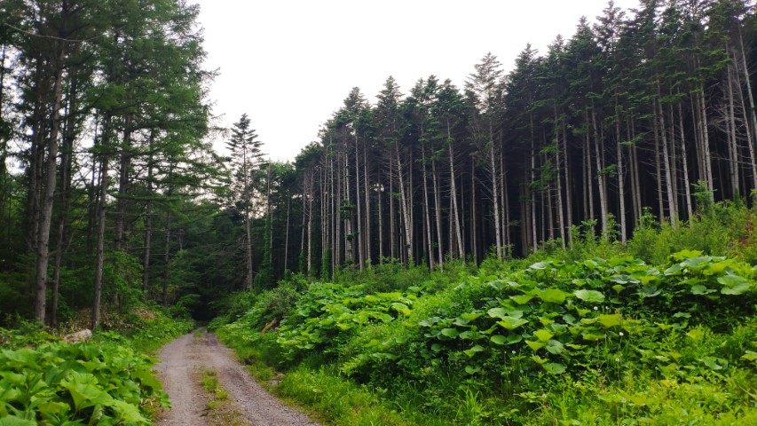
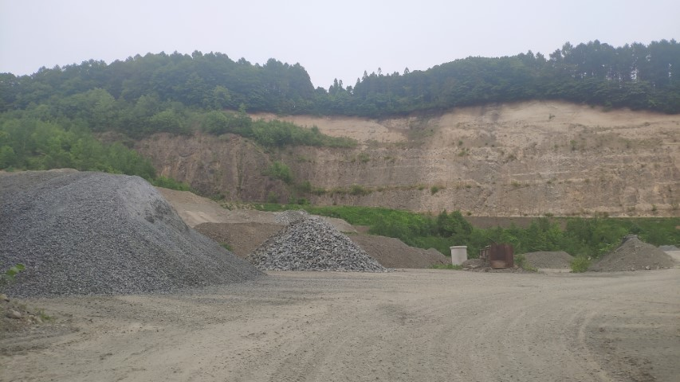
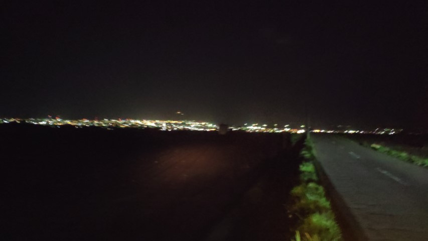

赤川・未来大周辺のおすすめスポットたちです。
未来大から近いというのもあって、比較的訪れやすいと思います。
未来大を下ったところにある、函館赤川通を北のほうへ進むとあります。
上まで登るのはけっこうつらいので、乗り物で行くことをおすすめします。
新中野ダムを上まで登って、さらに奥へと進むと赤川林道に行くことができます。
どんどん進んでいくと、採掘場のようなものもあります。
地面の状況が悪いので、雨の日、雨の次の日は行くことをおすすめしません。
こちらは、もどきの丘（通称裏夜景）です。
夜に訪れると、函館市の夜景を裏から眺めることができます。
私の大好きな桔梗町周辺のおすすめスポットたちです。
昔ながらの雰囲気を纏い、立地的にも面白いところにある桔梗駅です。
私は別に列車に乗るわけでもないのにたまに行きます（）
こちらも先ほど紹介したもどきの丘のように、夜に訪れることによって夜景を楽しむことができるスポットです。
もどきの丘と比べて人気が低い気がしますが、こちらも景観が非常によいのでおすすめです。
「楽しそう！」と思ったらぜひ行ってみてください。